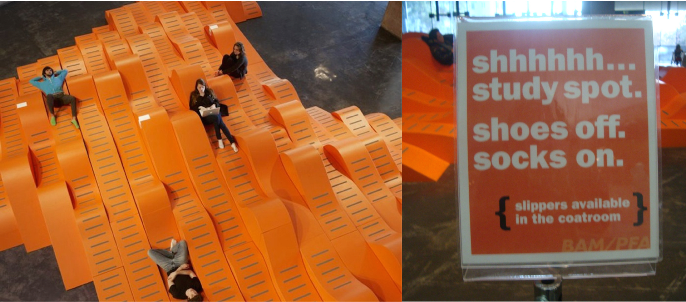

ETHNOGRAPHY
BAMSCAPE
Art in the Culture of Technology
“How often does one get to sit around and lounge on a piece of art?” Thom Faulders’ gigantic lounge chair, a hybrid of sculpture, furniture, art, and stage allows the visitor/viewer to experience his creation up, close and make it personal. This modular structure is called “BAMscape.” Bamscape was commissioned by the Berkeley Art Museum, as part of the highly eclectic UC Berkeley campus, in Northern California. BAMscape provides a centerpiece for the museum creating an environment of connectivity and a vista to host various events.
Bamscape is a 1550 sq. feet sculpture/stage/landscape with undulating curves that embrace the human body. Thom Faulders, the artist studied the human form in various reclining positions to create the right bends and curves that support the human form. Each of the 135 sections of the Bamscape is unique. The pieces are carved out of wood using digital technology and then transported to the museum, where they are fastened together using foam. The structure's candid pop orange color adds warmth to the gray concrete building. It augments the tactical element of the space by inviting an interaction from the museum visitors, students, art lovers and performance attendees. Bamscape has initiated a reasonable response in the artist community. Artists from different disciplines are using it as a stage, backdrop to connect to the relevant audience as well as establish their association with the bigger picture behind the object of art. Hip Belgian designer, Van Beirendonck, showcased his first ever fashion show in the United States at the Bamscape. Faulders conceives of Bamscape as “a new social nerve center to the museum experience.” Bamscape characterizes Post Modernism in a way that it defies the sincerity of traditional skill set and chooses technology to execute the concepts. It also diminishes the orthodox distance between an object of art and the spectator allowing for an unintimidating experience to the viewer. The artist Thom Faulders is particularly interested in exploring the “dynamic relationship between user and the environment”
To dig deeper into how Faulders propels this relationship between the user and the environment, I would apply the anthropological theory of material culture. Inventory of the Bamscape: 1. Electrical plug points 2. Free wireless internet 3. Sign post that says: “quiet study area, shoes not allowed” 4. Laptops 5. Mobile phones 6. Hand bags and back packs 7. Lounging visitors Almost every person who visited Bamscape owned at least one digital device mentioned above. During my multiple visits to the museum I observed the visitors following a common ritual. They would walk into the atrium, read the bright orange signpost displaying the instructions and head over to the edge of the installation. Following instructions they would take off their shoes before they climbed onto the structure. Upon finding a suitable spot to rest, they sat down on the ergonomic digital waves; they would then unpack their digital laptops or their smart phones and start using their digital devices. Do the electrical plug points in some way define the function of this landscape or does the art piece reflect the habits of the current cultural environment?
As stated in the module, human made objects consciously or unconsciously, directly or indirectly reflect the belief of the individuals as well as the society at large. Reflecting upon that thought it would be safe to infer then that the present culture of technology is influencing art and artist to explore unconventional ideas. Looking at Bamscape in the perspective of Durkheim’s Structural functionalism, we attempt to see the function of the Bamscape in the overall cohesive structure of the museum and the university. From the museum's point of view the Bamscape defines art as a tangible experience that allows for the user to form his/her own meaning about the idea. This form of art acts as an agent nudging the evolution of a sub-culture. Bamscape provides a free form seating environment that encourages solitary yet sociable relaxation. Friends face each other and chat while working on their individual laptops. Virtual social media allows an individual to be part of a global community while staying within their private environment. Does Bamscape symbolize a physical manifestation of virtual social media network? In the virtual social network, we are connected yet isolated. Lounging in the Bamscape, we can experience privacy in a large public environment. It encourages the formation of a mini beehive community within the bigger cosmos of the university.
Bamcape offers the community of UC Berkeley, an environment to express the current culture of technology. Its relevance depends on the contemporaneous culture of the environment and a specific point in time. Keeping in mind the deconstructionists attitude, one must note that the meaning of the object of art is continually changing. It would be safe to conclude the focus on connectivity through the experience of art is being established here. The choice of artist and the object of art symbolize the culture of Berkley.